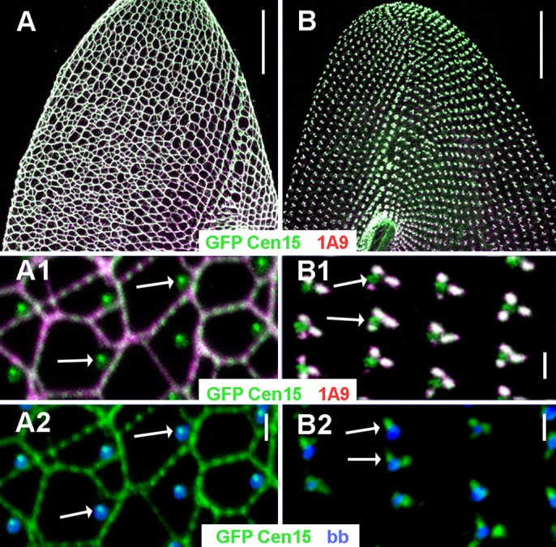

infraciliary lattice
A subcortical, calcium-responsive contractile network of centrin-containing filaments in Paramecium, assembled with Sfi1-like centrin-binding proteins. The mesh extends beneath the cell surface and is distinct from the basal-body-associated organizing centres and ICL1e complex that can persist when the extended lattice is lost. [DOI:10.1242/bio.024273]

NCBITaxon:5888) · Anne Aubusson-Fleury, Guillaume Balavoine, Michel Lemullois, Khaled Bouhouche, Janine Beisson, France Koll; CC BY, via PubMed Central; Aubusson-Fleury et al., Centrin diversity and basal body patterning across evolution: new insights from Paramecium, Biology Open (2017), doi:10.1242/bio.024273. Copyright 2017. Published by The Company of Biologists Ltd. CC BY 3.0; unmodified Figure 2. · CC_BY_3_0 · source: PMC PMC5483020.1 BIO024273F2 · DOI:10.1242/bio.024273Synonyms: ICL
Part of: GO:0030863 — cortical cytoskeleton (no local record)
Components
| Component | Type | Part of / acts on | Grounding | Genes | Stoichiometry | Essential | Role |
|---|---|---|---|---|---|---|---|
| Infraciliary-lattice centrins | Protein | part of | Reviewed label only (reviewed name; no accession asserted) | ESSENTIAL | Calcium-binding centrin-family constituents of the lattice. ICL1e-family depletion strips the extended network; essentiality here concerns lattice assembly, not cell viability or a requirement for every centrin homologue.
| ||
| Infraciliary-lattice Sfi1-like centrin-binding proteins | Protein | part of | Reviewed label only (reviewed name; no accession asserted) | ESSENTIAL | Scaffold class required for extended lattice assembly, exemplified by PtCenBP1. Not a claim that PtCenBP1 is the complete scaffold inventory.
|
Canonical examples
NCBITaxon:5888Paramecium tetraurelia — Wild-type reference strain d4-2 and mutant backgrounds were studied. Figure 2 compares an intact wild-type lattice with the BP ICL-less state; Methods identifies Delta-CenBP1/nd7-1 among the strains. The species taxon is verified at ENA; no strain identifier or clade-wide prevalence is inferred. [DOI:10.1242/bio.024273]
Functions
- Calcium-dependent lattice contractility — Supports cell contraction during secretagogue-induced calcium influx in the experimental Paramecium system; not assigned as a locomotory motor.
DOI:10.1128/EC.00197-07AED assay and PtCenBP1 RNAi connect lattice integrity with contractility.
- Post-exocytotic calcium-signal downregulation — Supports rapid recovery of intracellular calcium after exocytosis stimulation. ICL-less Delta-PtCenBP1 cells show slower signal decay without a change in initial signal generation; the authors interpret this as endogenous buffering.
DOI:10.1016/j.ceca.2008.06.004Primary abstract read: Fura Red ratio imaging compares d4-2 with Delta-PtCenBP1. Full methods were not reached; quantitative decay values are not curated.
Mechanism graphs
Constituent requirements for lattice assembly (ASSEMBLY)
| Subject | Predicate | Object | Evidence |
|---|---|---|---|
| Infraciliary-lattice centrins | are required for assembly of | Assembled infraciliary lattice |
|
| Infraciliary-lattice Sfi1-like centrin-binding proteins | are required for assembly of | Assembled infraciliary lattice |
|
Discussions
- CURATION_TODO (RESOLVED): Separate the infraciliary lattice from other centrin assemblies and ontology lattices. Similar names, shared centrin and neighboring localization do not establish structural identity.
- CURATION_TODO (OPEN): Resolve exact source-neutral families for the ICL centrin and scaffold classes. A broad family or domain must not silently substitute for the experimentally delimited component class.
- CURATION_TODO (RESOLVED): Do not transfer ICL1e-complex anchoring functions to the whole extended lattice. ICL-less cells retain basal-body-associated material, while centrin depletion affects more than one assembly.
- CURATION_TODO (OPEN): Resolve taxonomic extent and finer molecular mechanisms with direct evidence. Centrin conservation and network morphology do not establish universal lattice occurrence or a resolved contraction mechanism.
- CURATION_TODO (RESOLVED): Identify intact and ICL-less panels and preserve the figure's exact licence. Residual dots in a knockout are not an intact lattice, and different antibody targets are not interchangeable.
Evidence
DOI:10.1242/bio.024273Aubusson-Fleury et al. (2017). Read Introduction, ICL1e localization and depletion Results, strain, RNAi, immunostaining and microscopy Methods, and Figure 2 legend in Europe PMC JATS. These delimit the extended lattice and surviving basal-body-associated structures.DOI:10.1128/EC.00197-07Gogendeau et al. (2007). Publisher abstract, Methods, RNAi/localization Results and opening Discussion read. Earlier PMC and Europe PMC routes failed; the ASM publisher body subsequently succeeded.DOI:10.1242/jcs.019414Gogendeau et al. (2008). Europe PMC primary abstract read. DOI and publisher-search routes did not yield full text; no detailed methods, exact paralogue inventory or copy numbers are claimed.DOI:10.1016/j.ceca.2008.06.004Sehring et al. (2009). Europe PMC primary abstract read. DOI retrieval failed and a public PDF lead did not establish full-body access. The function is retained only at the explicitly reported qualitative comparison.GO:0005622Verified non-obsolete intracellular anatomical structure, used as a broad is-a parent.GO:0030863— cortical cytoskeleton Verified non-obsolete cortical cytoskeleton. The subcortical lattice is treated as a proper part, not the entire cortical framework.
Curation history
2026-10-03T20:44:50Zcodex · CREATED_RECORD — Scaffolded by scripts/new_record.py2026-10-03T20:46:26Zcodex · EXPANDED_RECORD — Added scoped primary evidence, component classes, calcium-related functions, assembly dependencies, boundary discussions and the verified CC BY 3.0 confocal Figure 2.2026-10-03T20:47:04Zcodex · CORRECTED_ATTRIBUTION — Preserved the JATS distinction between the copyright notice and publisher without assigning an unstated copyright holder.
Source: data/structures/cytoskeleton/infraciliary_lattice.yaml